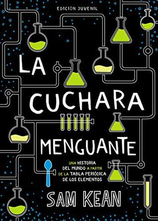

La cuchara menguante (OCIO Y CONOCIMIENTOS - Otros) (Spanish Edition)
Reseña por Jorge I. Zuluaga

Ver reseña en GoodReads (necesita cuenta)
Cualquiera que haya sido su relación con la tabla periódica, una relación de amor, odio o tedio, leer este libro le hará cambiar radicalmente su relación con ella. Lo hizo para mí por lo menos.
Había leído este clásico de la divulgación científica hace unos años (el libro no tiene más de 10 años ¡y ya es todo un clásico!). Lo volví a leer ahora para preparar un curso que estoy dictando de Física y me volví a enamorar. ¡Que libro!
No sé que es mejor en él.
Si lo bien escrito. El libro es muy agradable de leer, tiene un balance casi perfecto entre lenguaje técnico y lenguaje para cualquier nivel.
O lo entretenido. Se puede leer perfectamente de una sentada, sin aburrirse una pizca. Cuando crees que el tema se esta poniendo denso, hay un cambio de personajes (normalmente elementos químicos y las mujeres o los hombres que los descubrieron o estudiaron).
O lo exhaustivo. A diferencia de otros libros clásicos que se han escrito en el tema (por ejemplo el de la Tabla Periódica de Primo Levi), el libro logra cubrir casi todos los rincones de la tabla, hablar de casi cada elemento, así sea solo de paso. Al terminar la tabla periódica se habrá convertido (si lo lees con la tabla en la mano) en un "territorio" conocido.
O la organización. En lugar de hacer un recorrido predecible por la tabla, elemento por elemento; o uno más aburrido en orden cronológico por descubrimiento y descubridor o descubridora, el autor, el físico estaudinense Sam Kean, organiza de forma creativa su guía turística de la tabla.
Con títulos sugestivos como "los Galápagos de la tabla periódica", "los elementos de la guerra", "el pasillo de los venenos", "como nos engañan los elementos", "elementos políticos", "elementos y dinero", el libro es un verdadero recorrido de ensueño por las curiosidades, las historias, los países, los personajes, la economía, la química y la física de los elementos de la tabla periódica.
Si bien el libro fue escrito hace más de 10 años contiene temas de mucha actualidad científica. No se restringe a discutir o comentar temas exclusivamente históricos, eventos que ocurrieron hace décadas o siglos. También encontraran interesantes lecturas sobre superconductividad, condensados de Bose-Einstein, sonoluminiscencia, elementos super pesados, aceleradores de partículas, etc.
No puedo imaginar cómo se podría escribir un mejor libro sobre la tabla periódica. No puedo imaginar a alguien que no disfrute leyendo la Cuchara Menguante. ¡Léanlo!
Una nota final: hago esta reseña de la edición juvenil del libro que aparece en GoodReads (no quise crear una entrada nueva para la edición más larga de unas 400 páginas). Les recomiendo leer la edición original, no "resumida" del libro.
Les dejo como complemento de esta reseña, un hilo de Twitter con curiosidades sacadas del libro:
https://twitter.com/zuluagajorge/stat...